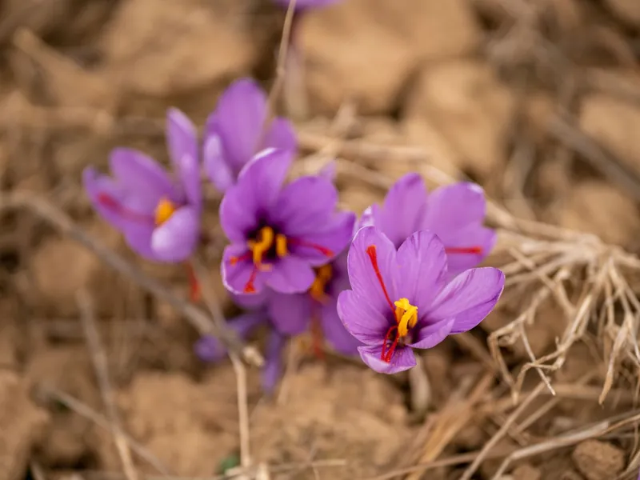

Zafferano in stimmi da Iglesias
Ogni fiore ne dà tre fili. Li vendiamo interi.
Coltiviamo il croco su un piccolo campo a Iglesias. Raccogliamo i fiori a mano, separiamo i fili uno per uno e li chiudiamo in vetro, così vedi quello che compri.
Scegli il vasetto
Tre fili per fiore
Il fiore del croco ha tre stimmi rossi: sono lo zafferano. Si tolgono a mano, fiore per fiore. Prova: ogni tocco è un fiore aperto e svuotato.
0 fiori, 0 fili nel vasetto
Come lavoriamo
- 1
I fiori si raccolgono a mano nelle prime ore del giorno, quando sono ancora chiusi o appena aperti.
- 2
Si aprono i petali e si separano i tre fili, uno per uno.
- 3
I fili si ungono appena con olio extravergine e si asciugano a calore basso, sotto i 45 gradi.
- 4
Vanno in vetro interi, mai in polvere, con l’anno di raccolta scritto sull’etichetta.
I vasetti
Il peso è dei soli fili. Spedizione in busta imbottita 4,90 €, gratis da 40 €.
Perché sull’etichetta non c’è scritto DOP
Lo Zafferano di Sardegna DOP si produce soltanto nei comuni di San Gavino Monreale, Turri e Villanovafranca. Il nostro campo è a Iglesias, fuori da quella zona. Per questo sull’etichetta c’è scritto solo «zafferano in stimmi», con il posto e l’anno di raccolta.